Редактор Pilas Engine має можливість експорту цілих проєктів для використання без редактора.
Щоб експортувати гру, просто натисніть кнопку "Експортувати" у редакторі:
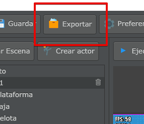
Далі нам буде показано екран експорту, який займе кілька хвилин, оскільки він має зібрати всі необхідні ресурси, а потім ми отримаємо стиснутий файл із проєктом:
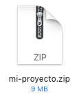
У файлі .zip міститься весь проєкт, тому ми можемо використовувати його як відправну точку, щоб перенести нашу гру в інше місце.
Файл .zip можна легко розархівувати за допомогою інструментів, встановлених у будь-якій операційній системі.
Після розпакування ми побачимо файл довідки та папку під назвою "proyecto" з усіма ресурсами нашої гри:
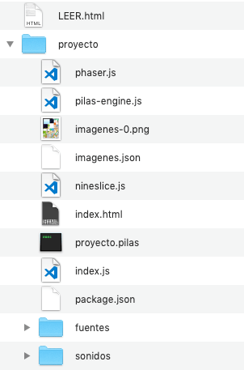
Першим кроком є встановлення Node.JS за допомогою терміналу.
Вам потрібно увійти в каталог "proyecto" у терміналі та виконати команду:
Якщо все піде добре, ми повинні побачити, як інсталятор Node.JS буде працювати протягом кількох секунд, щоб завантажити все необхідне для продовження роботи:
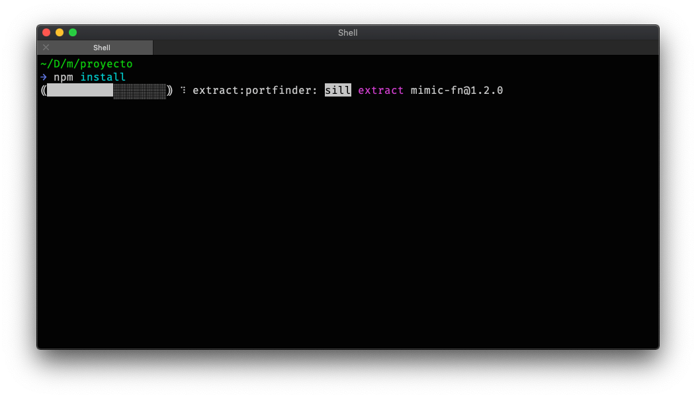
З цього моменту ви матимете можливість робити будь-яку з наступних речей.
Щоб запустити гру безпосередньо у вебпереглядачі, необхідно виконати цю команду у каталозі "proyecto":
Після цього відкриється вебпереглядач і ваша гра.
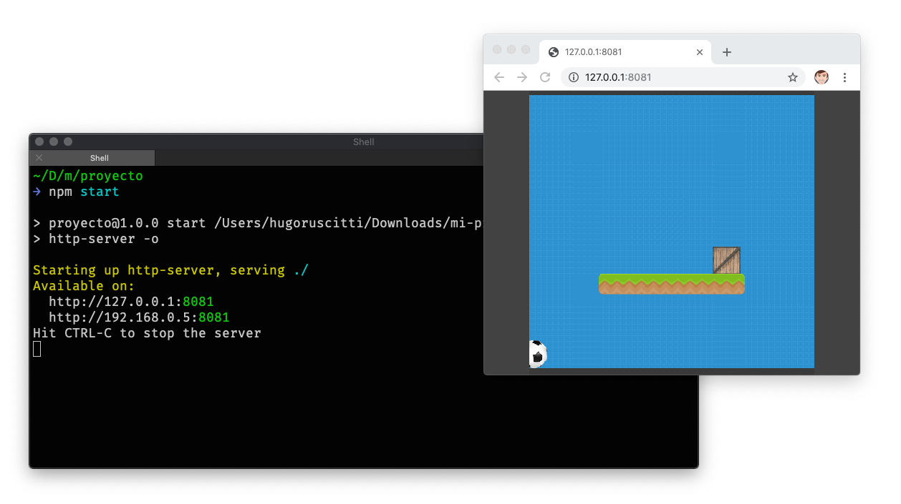
Зверніть увагу, що ігри не працюють безпосередньо у вебпереглядачі простим відкриттям файла index.html.
Інший варіант - запустити гру як окремий застосунок без вебпереглядача.
Для цього вам потрібно виконати цю команду:
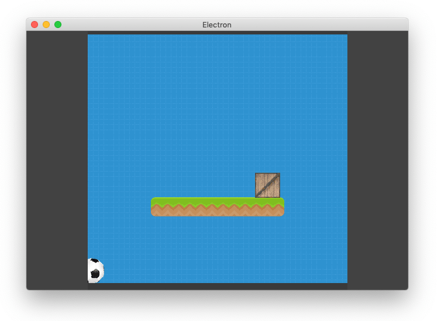
Під час експортування ігор дуже бажаною опцією є можливість зробити їх повністю портативними. У цьому разі для запуску гри не потрібно нічого встановлювати чи налаштовувати, а просто двічі клікнути на файлі для запуску.
Ця можливість реалізується за допомогою інструменту, який ми згадували раніше під назвою Electron і низки скриптів.
Отже, розглянемо найбільш популярний варіант - зробимо нашу гру компілюваною для Windows у вигляді файлу .exe. Нам потрібно двічі натиснути файли:
або відкрити командний рядок за допомогою команди "cmd", перейти у каталог експортованої гри та виконати ці команди:
npm install electron-packager --save-dev
node_modules/.bin/electron-packager . mijuego --platform=win32 --arch=ia32Після завершення виконання команди з’явиться повідомлення про те, що файли готові:
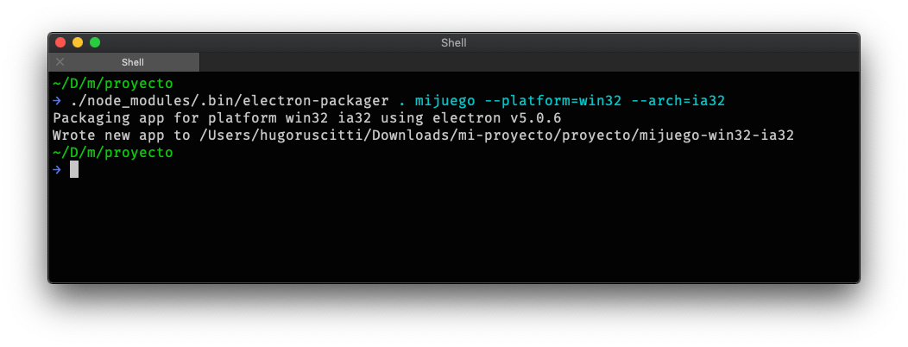
У цьому разі файли були згенеровані в каталозі під назвою "mmijuego-win32-ia32". Цей каталог можна надати користувачам Windows, щоб вони могли запустити гру, двічі натиснувши файл .exe:
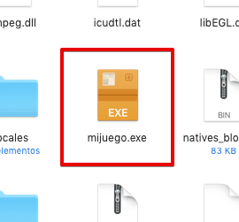
Якщо окрім Windows ви хочете перенести свою гру на інші платформи, як-от Linux, macOS або Raspberry, є також параметр для запуску збірки на всіх підтримуваних платформах (детальніше за покликанням):
До речі, якщо ви хочете дослідити, що саме роблять ці сценарії, ви можете продовжити дослідження, ознайомившись в документації зі створення файлів, що виконуються, де кожен крок компіляції описано вручну.
Якщо ви запакуєте гру за допомогою Electron, як показано вище, ви також матимете можливість налаштувати збірку для запуску в повноекранному режимі. Для цього вам потрібно відредагувати файл index.js, встановиши значення true для змінної pantalla_completa:
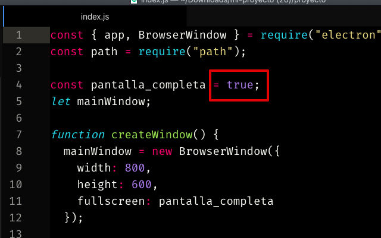
Якщо ви бажаєте перенести свою гру на мобільний пристрій або опублікувати в офіційному магазині застосунків, вам потрібно встановити фреймворк для створення мобільних застосунків Cordova, офіційний SDK для операційної системи вашого мобільного пристрою (Android або iOS) і скомпілювати гру.
Потім необхідно перемістити всі файли з каталогу "proyecto" (index.html, pilas-engine.js тощо) до каталогу "cordova/www".
Нарешті, вам доведеться додати основну платформу (Android або iOS), а потім розпочати збірку:
Наприклад, для iOS:
Тепер відкрийте проєкт із каталогу "platforms/ios" у xcode та запустіть:
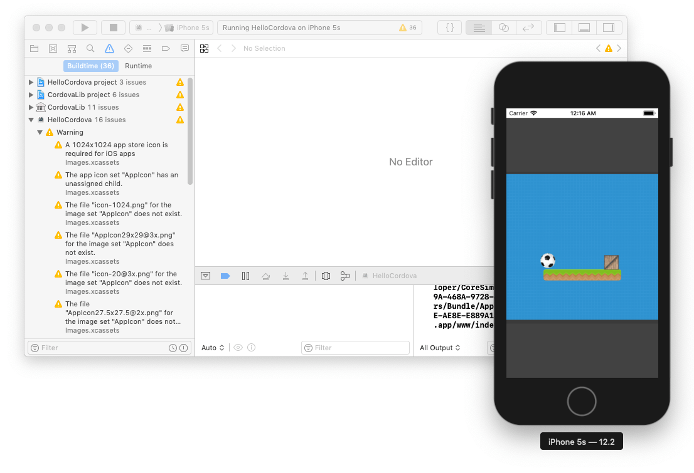
І для Android:
На цьому етапі переконайтеся, що ви перемістили всі файли з каталогу "proyecto" (index.html, pilas-engine.js тощо) до каталогу "cordova/www".
Далі вам потрібно створити проєкт для Android за допомогою цієї команди:
Потім відкрийте проєкт із каталогу "platforms/android" за допомогою Android Studio та натисніть кнопку запуску, щоб запустити емулятор:
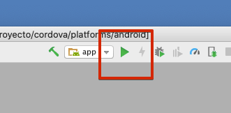
Або відкрийте меню "Створити", а потім "Створити APK(s)"" або "Створити підписаний APK", щоб створити файл .apk і встановіть його безпосередньо на свій мобільний пристрій або завантажте у магазин Google Play.